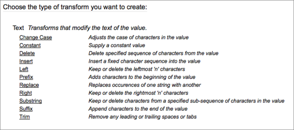
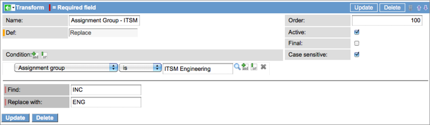
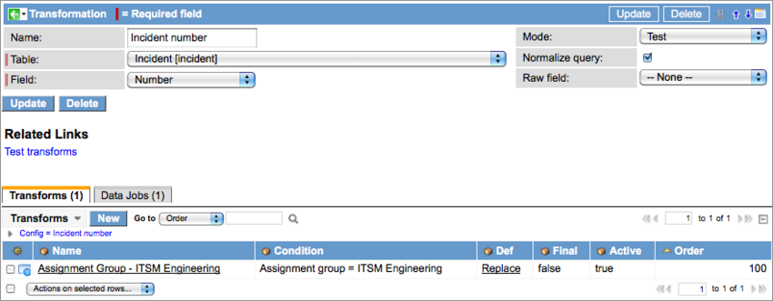
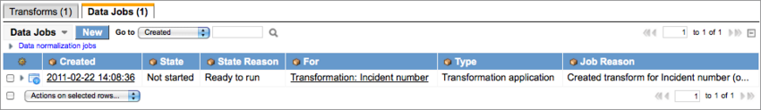
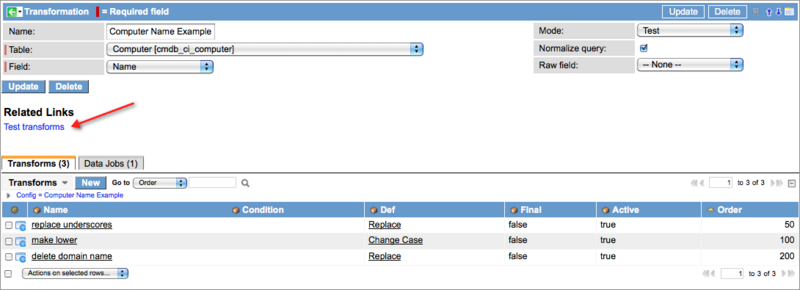
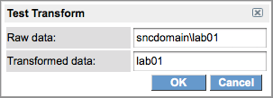
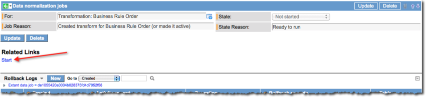

Field Transformations
| |
Note: This article applies to Fuji and earlier releases. For more current information, see Field Transformations at http://docs.servicenow.com
The ServiceNow Wiki is no longer being updated. Visit http://docs.servicenow.com for the latest product documentation. |
Contents
1 Overview
Field transformations enable an administrator to transform raw field input into standardized values that are more meaningful to an organization. Transformations are controlled by rules and can be configured for use in queries.
2 What Field Transformation Does
Field transformation standardizes a value in a specific field using rules. Examples of this might be a name format that removes designations such as Jr. and II from names, or a mode that rounds the amount of computer RAM detected by Discovery to a useful interval (4112 MB to 4000 MB). Transform records make up the rules that define how a field transformation is executed. Order values determine the order in which each rule is evaluated, and a check box on each transform enables an administrator to determine where processing stops when a rule evaluates to true.
2.1 Scripting and Transformation
Scripts that update records or insert records into the database (GlideRecord) are also normalized. For example, if a script to insert a CI record contains a RAM size of 4112, the script will be transformed to insert the CI with a RAM size of 4000 instead. Scripts that query the database for transformed field values return the normal value (such as 4000) rather than the original (raw) value.
2.2 Normalized Queries
An administrator can configure transformations to apply to queries issued against transformed fields in lists. In the list, create a filter using the original (raw) value for the transformed field in the query condition. Normalized queries for field transformations only work for is or is not queries.
{kind=link}
The filtered list returns records with the transformed value substituted for the raw value. However, the breadcrumbs for the filter display the original query conditions (raw value).
{kind=link}
3 Data Job
When a Transform is created, a Transform application data job is also created. This job can only be executed manually and applies the transform to all the appropriate fields in the database. Data jobs have a roll back feature that allows you to undo a transformation before committing changes that affect the entire database. Data jobs cannot be started when the Transformation record is in the Test mode. When testing is complete, change the Mode setting in the Transformation record to Active to enable the controls for the data job. See Task 4: Run the Data Job for details about running data jobs.
4 Testing Mode
Transformation is a powerful tool that can cause data issues if used incautiously. Test all transformations before committing the changes to the CMDB. All transformation records open in Test mode by default, which blocks administrators from running manual data jobs that apply changes to existing data. Only users with the normalization_tester role can transform data when a record is in the Test mode. This is limited to new records opened by the tester or records in which the transformed field is updated by the tester. To apply transformations to the CMDB after testing, change the mode to Active in the transformation record and run the appropriate data job. For information on testing transforms, see Task 3: Test the Transform.
5 Transforming a Field
To transform a field, perform the following tasks in order:
- Task 1: Create the Transformation Record
- Task 2: Select a Transform Type
- Task 3: Test the Transform
- Task 4: Run the Data Job
5.1 Task 1: Create the Transformation Record
- Activate the Field Normalization plugin.
- Navigate to Field Normalization > Configurations > Transformations.
- Click New.
- Create a transformation record using the following fields:
- Name: Unique name for this transformation record. This value is for reference only and is not used in any processing.
- Table: Select the ServiceNow table containing the field being transformed. It is important to understand the table hierarchy when setting up a field transform. For example, if you configure transformation for a field in the Computer [cmdb_ci_computer] table, that field will be transformed for all workstation machines, Windows servers, Linux servers, and UNIX servers.
- Field: Select the field to transform. The list presented contains only those field types (integer and string) from the table selected that can be transformed.
- Mode: The three available modes are Off, Test, and Active. All transformation records are created in the test mode by default. Do not change the mode until you have thoroughly tested the transformation. When testing is complete, change the mode to Active. To disable this transformation, switch the mode to Off.
- Normalize query: Select this check box to apply the field value transformed by this record to all queries involving this field. Queries issued with the raw (original) field value will be edited to use the transformation value.
- Raw field: Select the field to use to display the original input (non-normalized) values on a form in which a field value has been normalized. For the selection to appear in the drop-down list, add a custom field to the form for the table selected. For instructions on adding a field for raw data, see Creating a Raw Field.
- Click Submit.
- The Transforms and Data Jobs Related Lists appear on the form.
5.2 Task 2: Select a Transform Type
- In the Transformation record, select the Transforms Related List.
- Click New.
- A selection list of transform types appears, displaying only those transformations appropriate for the field type selected.
- 
- Select a transform type and provide the appropriate parameters.
- Select an Order number for this transform.
- The conditions for the transforms are executed according to the order numbers assigned.
- Select the Final check box to stop processing with this transform if the condition evaluates to true.
- Select the Case sensitive check box to force case sensitivity in the condition statement.
- To create a condition that uses regular expressions or pattern matching, select the correct operator.
- For regular expressions, select matches regex.
- For pattern matching, select matches pattern.
- The following transform example replaces the INC at the beginning of an incident number with the string ENG if the assignment group is ITSM Engineering.
- 
- Click Submit.
- The new Transform appears in the Related List of the Transformation record.
- 
- When the Transform is created, a Transformation application data job is also created. This data job applies this transform to appropriate records in the entire database and should not be run until testing is complete.
- 
{kind=link}
{kind=link}
{kind=link}
{kind=link}
5.3 Task 3: Test the Transform
| |
Note: Users must have the normalization_tester role to create test records. |
New transformation records open in the Test mode by default, enabling administrators to test transforms thoroughly before applying them to the existing records in the database. In the test mode, the Start controls are not available for the Transform application data job. There are two methods for testing transforms before committing the transformations to existing data.
- Create or update records: In the test mode, only records that have been created or updated by a user with the normalization_tester role are transformed. Grant the normalizer and normalization_tester roles to the same user or grant them to separate users.
- Test transforms utility: This feature enables a normalization tester to transform field values on the fly without opening or updating records. This utility tests all the transforms configured for this field.
- Open a Transformation record.
- Click the Test transforms Related Link.
- 
- A dialog box appears for testing field values.
- Enter a value to transform in the Raw data field.
- Click OK.
- The platform transforms the raw value in the Transformed data field.
- 
- Enter new raw data to test other transforms.
- Click Cancel to end the test.
- When testing is complete, change the Mode to Active and run the data job.
{kind=link}
{kind=link}
{kind=link}
5.4 Task 4: Run the Data Job
After successfully testing the transform, start the Transform application data job to apply the transform to all the appropriate records in the database.
5.4.1 Running Single Jobs
- Open the Transformation record and switch the Mode to Active.
- Select the Data Jobs Related List.
- Run the data job using one of the following methods.
- In the list of data jobs, select the check box of the job you want to run, and then select Start from the Actions menu.
- Click on the link in the Created column to open the data job, and then click the Start Related Link
- 
- The State of the jobs turns to Queued as it runs and to Completed when it finishes successfully.
- This is how the data job appears in the Transformation record after completion.
{kind=link}
{kind=link}
{kind=link}
5.4.2 Running Multiple Jobs
To run data jobs for multiple field transformations:
- Navigate to Field Normalization > Data Jobs > All.
- Select the check boxes for the jobs you want to start.
- These jobs must have the Mode set to Active.
- Select Start from the Actions menu.
- The platform only runs data jobs from Active transformations. The Action menu indicates the number of Active data jobs that can run. For example, the menu might display Start (3 of 4).
6 Creating a Raw Field
A Raw field is a custom field created by an administrator to show the original (raw) input in a field on a form after it has been normalized or transformed.
- In the form containing the field that is being normalized or transformed, right-click in the header bar.
- Select the appropriate option for your version:
- Complete the Create new field form at the bottom of the page, and then click Add:
- Name: Type the field label. In this case, use Raw + <field label>.
- Type: Select a data type from the list for this field.
- Field length: Select the character limit for this field. The default is 40.
- Move the new field adjacent to the normalized field using the direction arrows in the slushbucket.
- Click Save.
{kind=link}
7 Identifying Transformed Fields
Transformed fields in ServiceNow records are marked with an icon that links to different targets, depending on the user's role. Users with the normalizer role can click on the icon for direct access to the transformation configuration record for that field. When a user without the normalizer role clicks the link, a Wiki page appears that provides help on the form. A preference, called Restrict to roles, enables an administrator to define the roles that are permitted to see the icon. If no roles are specified, then the icon is visible to all roles.
{kind=link}